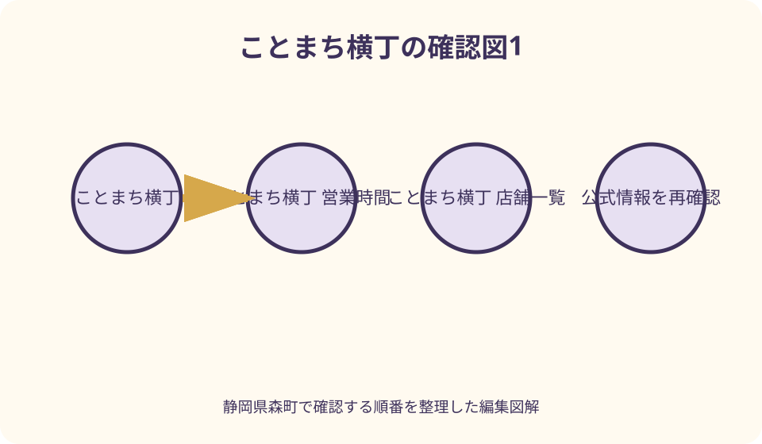
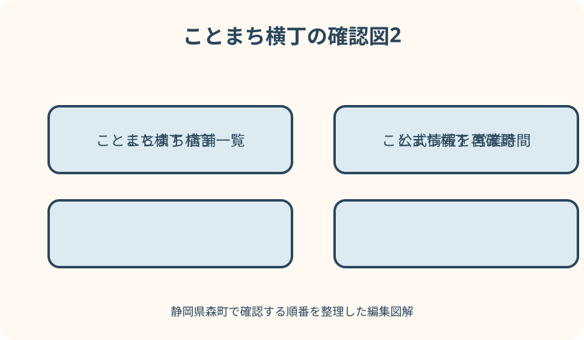

ことまち横丁｜最終確認 2026-08-10
静岡県森町・ことまち横丁総合ガイド｜食べ歩き、お茶、小國神社参拝を一度に楽しむ
初訪問なら、到着後に当日の営業店舗と駐車位置を確認し、小國神社への参拝と横丁での飲食を一つの徒歩行程として組み立てるのが分かりやすい回り方です。先に参拝するか先に食べるかは、混雑と空腹の度合いで決め、持ち帰れるお茶や菓子は最後に選ぶと荷物を抱えて境内を歩かずに済みます。紅葉や正月などは交通規制や駐車場の利用条件が変わる場合があるため、出発前に小國神社の交通案内とことまち横丁の新着情報を確認してください。

編集イラスト初めて訪れる人へ——横丁だけで終わらせない回り方
ことまち横丁は、飲食店を一軒選んで食事を済ませるだけの場所として考えるより、小國神社への参拝、森町のお茶を知る時間、甘味や軽食の食べ歩きを一つにつなぐ門前の立ち寄り先として考えると全体像をつかみやすくなります。公式サイトには複数の店と休憩所が掲載されており、同じ敷地内でも目的は食事、甘味、買い物、休憩に分かれます。
最初に決めたいのは、食べたい商品ではなく滞在の順番です。参拝を主目的にする人は、到着時の人出を見て社殿へ向かう時間を先に確保します。食べ歩きを主目的にする人も、買った品を持ったまま長く歩くより、境内を歩いた後に横丁へ戻る方が動きやすい場合があります。同行者の体力や天候を見て順番を入れ替えてください。
横丁の公式案内は通常の営業時間を掲載していますが、すべての店が毎日同じ品を同じ条件で提供するとは限りません。季節の商品、実演販売、売り切れ、臨時の営業変更は当日に変わり得ます。入口や各店の掲示を見て、その日に利用できる内容を確かめてから行程を決めるのが安全です。
この記事では、公式に確認できる店舗名や交通条件と、現地でしか確定できない混雑、待ち時間、販売状況を分けて説明します。出発前に全部を決め切るのではなく、第一希望と短時間で切り替えられる第二希望を一つずつ用意しておくと、混んだ日でも参拝と休憩の両方を守れます。
公式情報から確定できる店舗、住所、営業時間
ことまち横丁の公式サイトが掲載する所在地は、静岡県周智郡森町一宮3956-1です。小國神社の公式交通案内も同じ番地を所在地として示しています。別々の観光地を車で移動する組み合わせではなく、一度到着した後に門前と境内を徒歩でつなぐ訪問先として計画できることが、この場所の大きな特徴です。
横丁の公式サイトには、森の茶本舗、茶寮宮川、真っ赤な袋のお茶の詰め放題、宮川カフェ、ことまちわらび餅、ことまちカフェテリア、寺子屋本舗、隠れ河原のかりん糖、休憩所が案内されています。店名だけを見ても、茶葉、食事、甘味、軽食、土産、休憩という役割の違いが読み取れます。
公式サイトが示す通常の営業時間は、横丁が9時30分から16時30分、森の茶本舗が9時から17時30分です。ここで注意したいのは、横丁全体と茶本舗の終了時刻が同じではないことです。遅い時間に到着しても、すべての店を利用できるとは限らないため、食事や実演を目的にする場合は余裕を持って到着してください。
森町公式の観光案内は、町の観光に関する問い合わせ先として森町観光協会を案内し、森町役場内の連絡先、平日8時30分から17時15分までの受付時間を掲載しています。個別店舗の当日営業は運営者へ確認し、周辺を含む観光相談やボランティアガイドは観光協会へ相談するというように、質問先を分けると確認が早くなります。
森町公式は、森町を三方の緑の山と太田川に囲まれた『遠州の小京都』として紹介し、茶を伝統的な産業の一つに挙げています。横丁で茶を飲み、買う体験は単なる休憩ではなく、森町の土地と産業を知る入口になります。ただし、産地や原材料は商品ごとに表示を読み、分からない点は店頭で確かめることが大切です。
食べ歩きは『食事・甘味・持ち帰り』の三つに分ける
店名を上から順に全部回ろうとすると、同じ種類の甘味が続いたり、食事の前に満腹になったりします。まず、その場で腰を落ち着けて食べるもの、歩きながらまたは休憩所で味わうもの、家へ持ち帰るものの三つに分けると選びやすくなります。家族で一つずつ選び、分けられる品は相談して重複を避ける方法もあります。
しっかり食べたい人は茶寮宮川やことまちカフェテリア、飲み物と甘味を休憩の中心にしたい人は宮川カフェやことまちわらび餅、焼き菓子やかりん糖を選びたい人は寺子屋本舗や隠れ河原のかりん糖というように、公式サイトの店別ページを出発前に見て候補を絞れます。実際のメニューと提供時間は店頭表示で確認してください。
食べ歩きでは、買えるかどうかだけでなく、どこで食べるかを先に見ます。参道や境内は信仰の場であり、混雑する通路で立ち止まると他の参拝者の動きを妨げます。横丁の休憩所や店舗が案内する場所を利用し、ごみの扱いも購入店の案内に従うと、門前らしい落ち着きを損なわずに楽しめます。
小さな子どもや高齢の同行者がいる場合は、一度に多く買わず、最初の一品を休憩所で食べてから次を決める方が無理がありません。列に並ぶ人と席を探す人を別々に動かすと行き違いが起きやすいため、集合場所を決め、注文前に全員の希望とアレルギー表示を確認してください。
持ち帰り品は、参拝を終え、車やバスへ戻る直前に選ぶと扱いやすくなります。気温の高い日は商品の保存条件を店頭で聞き、長時間車内へ置かないようにします。寺社の自然散策まで組み合わせる日は、手提げ袋が歩行の妨げにならない量へ抑えることも、気持ちよく過ごすための実務的な判断です。

名物のお茶詰め放題で、煎茶・くき茶・ティーバッグを選ぶ
公式ページは、真っ赤な袋のお茶の詰め放題を、遠州産の深蒸し茶を使った実演販売として紹介しています。掲載されている選択肢は、深蒸し煎茶、深蒸しくき茶、深蒸しティーバッグです。同じ『お茶』でも飲み方と片付け方が違うため、量の多さだけでなく、家で実際に使い切れる形を選ぶことが大切です。
深蒸し煎茶はコクを重視する人、くき茶は公式案内が勧める熱めのお湯で爽やかな味と香りを楽しみたい人、ティーバッグは急須を使わず職場や旅行先でも飲みたい人に向きます。贈る相手が急須を持っているか分からない場合は、使い方を説明しやすいティーバッグも候補になります。
実演販売には専用の保存袋が付くと公式ページにあります。また、工場で密封した真空パックも紹介され、保存用や土産用、全国発送への問い合わせが案内されています。すぐ飲む分は実演、開封時期を遅らせたい分は密封品というように、目的を分けて店頭で相談すると選びやすくなります。
詰め放題の価格、実施状況、選べる茶、発送条件は、この記事で固定値として扱いません。公式ページを見ても当日の在庫や待ち時間までは確定できないからです。これを旅の唯一の目的にせず、実演を待つ間に森の茶本舗の商品を見る、混雑時は密封品を選ぶという代案を用意してください。
森の茶本舗で、森町のお茶を土産から日常へ持ち帰る
森の茶本舗の公式ページは、季節のお茶、普段使いのお茶、少量包装の厳選茶、茶器、お茶を使った菓子を案内しています。試飲や香りだけで決めるのではなく、自宅で飲む頻度、一回に使う人数、湯を沸かす道具まで思い浮かべると、買った後に棚へ残りにくい品を選べます。
公式ページによれば、同店の茶の多くは深蒸し茶です。深蒸し茶を初めて買う人は、茶葉の細かさや湯温、抽出時間を店頭で尋ね、包装へ書かれた淹れ方を残しておくと再現しやすくなります。高価な一袋を勘で選ぶより、少量包装で飲み比べて自分の好みを知る方法もあります。
茶器を一緒に選ぶ場合は、見た目だけでなく茶こしの形、洗いやすさ、一度に淹れられる量を確認します。水出し用ボトルやティーバッグのように、暮らしの場面を変える道具も公式ページに掲載されています。森町で飲んだ味を家で続けるには、茶葉と道具の組み合わせまで聞くのが近道です。
お茶を使った菓子は配りやすい土産になりますが、抹茶、ほうじ茶、粉末茶など使われる素材は商品ごとに異なります。贈る人数、賞味期限、保存温度、アレルギー表示を現物で確かめ、車内に置く時間も考えて購入してください。『森町らしい』という印象だけでなく、渡す相手が扱いやすいことまで含めて選びます。
小國神社との徒歩動線——参拝と買い物を一度の駐車でつなぐ
横丁と小國神社は公式サイト上で同じ所在地が示され、横丁公式の案内図にも小國神社が隣接する訪問先として掲載されています。したがって基本は、駐車後に車を何度も動かすのではなく、現地案内に従って徒歩で参拝と買い物をつなぐ行程です。正確な入口と通れる道は当日の誘導表示を優先してください。
先に参拝する順番には、手荷物が少ない状態で境内を歩ける利点があります。小國神社公式は、本宮山の山麓、清流宮川のほとりに鎮座し、広い神域やモミジの景観を案内しています。社殿だけを往復するつもりでも、季節の景色を見て歩く時間が延びることがあるため、飲食の終了時刻から逆算します。
先に横丁へ寄る順番は、空腹の子どもがいるときや、到着時に店の列が短いときに有効です。ただし、食べ物や大きな買い物袋を持って境内へ入ることにならないよう、休憩所で食べ終える、持ち帰り品は帰りに受け取れるか店へ聞くなど、参拝時の荷物を減らす工夫が必要です。
徒歩分数を一律に示さないのは、駐車する区画、境内で訪ねる場所、混雑時の迂回、同行者の歩く速さによって変わるからです。到着後に案内図で駐車位置、参道入口、横丁、休憩所を確認し、『何時にどこへ戻るか』を家族で共有してから分かれると安心です。

駐車場と交通——約700台という数字だけで判断しない
ことまち横丁公式は無料駐車場を約700台収容と案内し、小國神社公式も無料駐車場約700台と掲載しています。ただし、700台という数字は、訪問日に必ずすべての区画を使えることや、横丁のすぐ前へ停められることを保証するものではありません。現地の係員、看板、区画の開閉状況に従ってください。
小國神社公式の駐車場案内は、第5駐車場が工事中で、工事終了後も正月、七五三、紅葉の繁忙期のみの利用となる旨を掲載し、開設期間は現地入口表示の確認を求めています。掲載内容は2024年12月現在とも明記されています。出発前に最新ページを確認し、古い画像だけを保存して判断しないことが重要です。
車では、公式案内上、新東名の遠州森町スマートICから約7分、森掛川ICから約15分、東名の袋井ICから約20分が目安です。紅葉や正月など混雑が予想される場合は交通規制が行われる場合があるため、通常時の所要時間を到着期限として使わず、余裕を持たせます。
鉄道とバスでは、JR袋井駅または天竜浜名湖鉄道遠州森駅から秋葉バスの小國神社開運線が案内されています。運行日と時刻は変動するため、横丁公式からも案内される路線バスの最新時刻を事業者サイトで確認し、帰りの便を先に決めます。買い物量も、乗車時に安全に持てる範囲へ抑えてください。
良い点——食、茶、祈りが近いから一人ひとりの過ごし方を変えられる
良い点の第一は、同行者全員が同じ行動を取り続けなくても、一つの訪問先としてまとまりやすいことです。参拝を丁寧にしたい人、甘味を楽しみたい人、お茶を選びたい人、途中で休みたい人が、それぞれの目的を持ちながら集合場所を共有できます。別々の施設を車で巡るより予定を調整しやすい構成です。
第二は、森町のお茶を、飲む、菓子で味わう、詰め放題で選ぶ、茶器と一緒に持ち帰るという複数の入口から知れることです。森町公式が伝統的な産業として挙げるお茶を、説明文だけでなく自分の暮らしに合う形へ置き換えられます。店員へ淹れ方を聞く時間も体験の一部です。
第三は、短時間の立ち寄りと半日の滞在の両方を組み立てられることです。時間が少なければ参拝と一品、余裕があれば境内散策、食事、茶選びまで広げられます。最初から全部を予定へ詰めず、当日の天候と混雑を見て行程を伸縮できることが、再訪しやすさにもつながります。
第四は、横丁のにぎわいと神社の静けさを徒歩で切り替えられることです。ただし、この対照を楽しめるのは、飲食の場所、参拝の作法、通路を譲る意識を守ってこそです。店と神社を同じ娯楽施設として一括りにせず、門前で商いが続く背景と、祈りの場への敬意を両立させたいところです。
注文したい点——営業時間、販売状況、駐車情報を一画面で確定できない
注文したい点の第一は、横丁全体の通常営業時間が分かっても、各店の営業日、注文終了時刻、当日の売り切れまで一つのページで確定できないことです。特定の商品を目当てに遠方から行く人は、公式の新着情報を確認し、必要なら運営者へ問い合わせる必要があります。記事の古い紹介写真だけで判断してはいけません。
第二は、駐車場約700台という案内と、各区画の利用条件を別ページで照合する必要があることです。繁忙期には交通規制の可能性もあります。横丁側の案内だけでなく、小國神社の交通案内、駐車場マップ、現地表示を一組として確認できる導線が、さらに分かりやすくなることを期待します。
第三は、食べ歩きの利用者が、休憩できる場所、ごみを戻す場所、雨天時に待てる場所を事前に把握しにくいことです。公式サイトには休憩所が掲載されていますが、混雑時の利用状況までは分かりません。現地で席を確保できない前提も持ち、車内飲食や境内での無理な立ち食いへ流れない代案が必要です。
第四は、公共交通で訪れる人にとって、運行日への注意が必要なことです。直通バスが案内されていても、いつでも同じ本数があるとは限りません。横丁での滞在を延ばした結果、帰りの便を逃さないよう、店舗の終了時刻よりバスの出発時刻を先に予定表へ入れるべきです。
対案・結論——混雑時は『参拝・休憩・土産』の優先順位を入れ替える
第一の代案は、駐車待ちや店の列が長いとき、買い物を先に済ませようとせず、現地誘導が許す範囲で参拝を先にすることです。時間を置いて横丁へ戻れば列が短くなる可能性があります。ただし、必ず短くなるとは限らないため、食事の終了時刻と帰路の予定は動かさないようにします。
第二の代案は、食事の第一希望が混んでいたら、甘味とお茶で短く休み、町内の別の食事候補へ移ることです。駐車区画の無断な出入りや路上待機は避け、車を動かす場合は同行者全員がそろってからにします。横丁ですべての食事を完結させることを旅の成功条件にしない方が落ち着いて選べます。
第三の代案は、詰め放題に待ち時間がある場合、森の茶本舗の密封品、少量包装、ティーバッグ、茶菓子へ切り替えることです。実演の楽しさと、持ち帰る茶を確実に選ぶことは別の目的です。待つ時間が参拝や帰りのバスを圧迫するなら、商品選びを優先する判断にも十分な意味があります。
結論として、初訪問の基本形は『到着後に営業と交通を確認する、手荷物の少ないうちに参拝する、横丁で休憩と食事を選ぶ、最後にお茶と土産を買う』です。空腹や混雑に応じて前後を入れ替え、第一希望がかなわなくても参拝、休憩、土産のうち二つを守れる計画にしてください。
大石の視点——現地で予定を変えられる余白が、森町を丁寧に味わわせる
私は、地域を紹介する記事ほど、名物を漏れなく制覇する予定表にしない方がよいと考えます。ことまち横丁と小國神社は近いからこそ、横丁の列、境内の木々、宮川の様子を見て、その場で時間配分を変えられます。予定を一つ減らすことは失敗ではなく、目の前の場所を急がず見るための選択です。
森町らしさを持ち帰るなら、商品の数より、なぜその茶を選んだかを家族へ話せることの方が残ります。煎茶かくき茶か、急須かティーバッグかを店で聞き、自宅で最初に淹れる日まで決めておく。そうすれば土産が棚に眠らず、訪問後の暮らしへつながります。
混雑日は、空いている駐車場を探して周辺を何度も走るより、公式の交通案内と現地誘導へ従うことが最優先です。車を停めた後も、家族が別行動をするなら、店名だけでなく案内図上の集合場所と時刻を決めます。携帯電話がつながることだけを前提にしない方が安心です。
門前の商いと神社は互いに近くても、役割は異なります。食べ歩きの楽しさを境内へそのまま持ち込まず、参拝を終えた後に横丁のにぎわいへ戻る。この小さな切り替えができると、買い物の満足だけでなく、森町一宮という土地を訪ねた手応えが深くなると思います。
まとめ——出発前の三確認と、現地での一確認
出発前は、ことまち横丁公式で通常営業時間と新着情報、小國神社公式で交通規制の注意と駐車場、公共交通なら運行事業者の最新時刻を確認します。営業時間と駐車台数だけを切り取らず、訪問日固有の変更がないかを見ることが、遠方からの訪問では特に重要です。
現地では、営業中の店、列の長さ、休憩所、帰る時刻を確認してから、参拝と食事の順番を決めます。食事、甘味、詰め放題、土産を全部達成しようとせず、同行者が一番楽しみにしているものを一つ守ります。残りは次回へ回せることも、門前を繰り返し訪ねる楽しみになります。
森町のお茶を選び、小國神社の杜を歩き、横丁で一息つく。この三つを急がずつなぐことが、この場所に合った過ごし方です。最新情報と現地表示を確かめ、混雑時は順番を変え、参拝者と買い物客が同じ道を気持ちよく使えるよう配慮して訪ねてください。
公式情報・確認先
掲載内容は次の一次情報を基礎に整理しました。営業、料金、催し、交通は変わるため、出発前または手続き前にリンク先で最新情報を確認してください。
- 小國ことまち横丁 公式サイト（ことまち横丁、2026-08-10確認）
- 真っ赤な袋のお茶の詰め放題（ことまち横丁、2026-08-10確認）
- 森の茶本舗（ことまち横丁、2026-08-10確認）
- 観光案内・地図（静岡県森町、2026-08-10確認）
- 『遠州の小京都』まちづくりを推進しています（静岡県森町、2026-08-10確認）
- 交通案内（遠江国一宮 小國神社、2026-08-10確認）
- ご参拝の皆様へ（遠江国一宮 小國神社、2026-08-10確認）